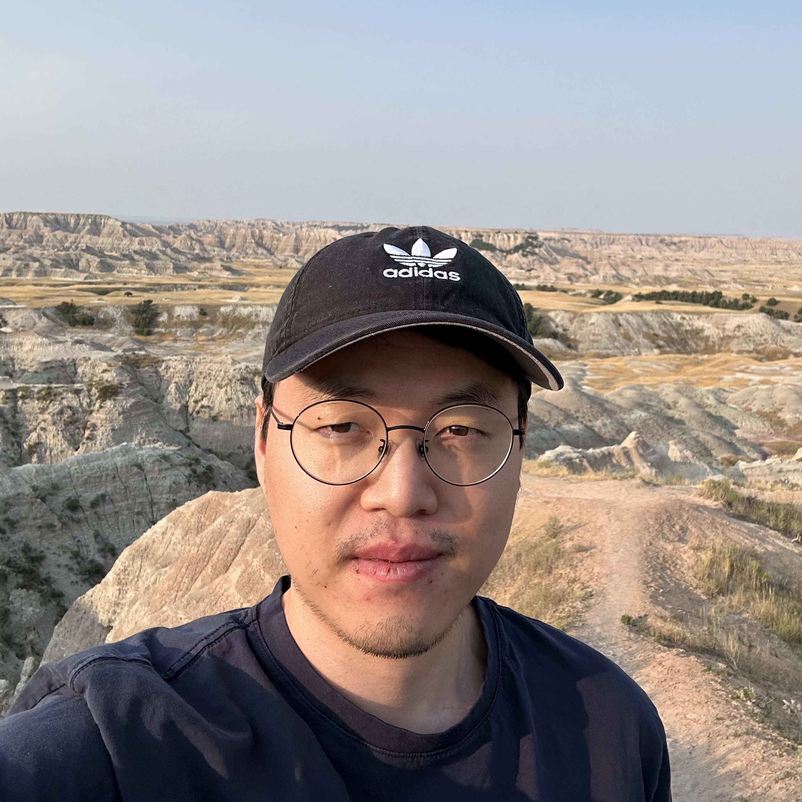

Photonics engineer at Flexcompute
Jungmin Kim
I work on the simulation and inverse design of photonic systems for optical computing.

01 About me
I’m a Senior Photonics Engineer at Flexcompute, based in Madison, Wisconsin.
Previously, I worked with Prof. Zongfu Yu at the University of Wisconsin–Madison from 2023 to April 2026, studying neuromorphic metasurfaces and photonic integrated circuits.
I earned my Ph.D. in Electrical and Computer Engineering at Seoul National University in 2023, advised by Prof. Namkyoo Park and Prof. Sunkyu Yu. My doctoral research explored deep learning and disordered, time-varying photonics.
Outside work, I enjoy running along Lake Mendota, paddleboarding, and visiting national parks.
02 Selected publications
Get in touch